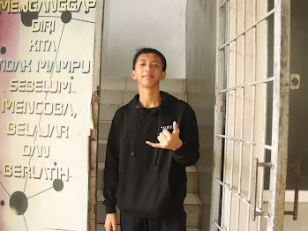
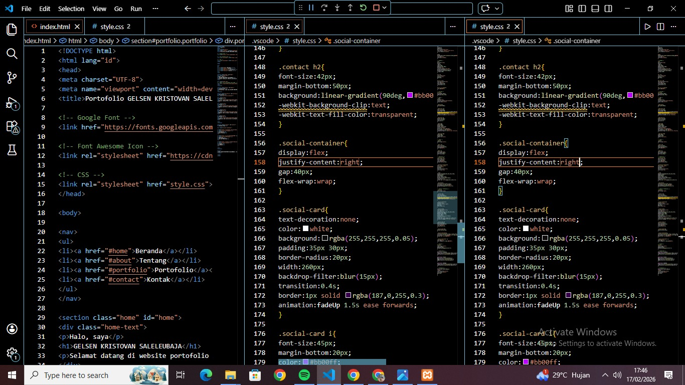
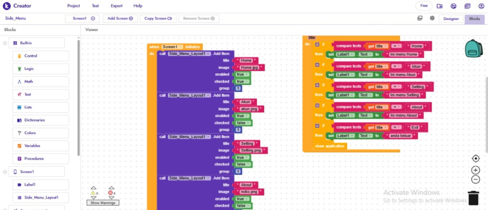

Hallo, saya
Selamat datang di website portofolio saya. Saya adalah seorang pelajar di SMK BAGIMU NEGERIKU yang tertarik dalam bidang desain grafis dan pengembangan web.

Perkenalkan, nama saya GELSEN KRISTOVAN SALELEUBAJA, saya berusia 15 tahun dan berasal dari daerah Kepulauan Mentawai. Saat ini saya bersekolah di SMK BAGIMU NEGERIKU, duduk di kelas 10 dengan jurusan Rekayasa Perangkat Lunak (RPL). Saya memiliki minat besar di bidang komputer, khususnya dalam web development, proggramer, designer, editor, dan coding, karena saya senang menciptakan karya digital yang kreatif dan bermanfaat. Selain aktif dalam bidang akademik, saya juga merupakan anggota Paskibra ke-80 Tahun Kemerdekaan yang melatih saya menjadi pribadi yang disiplin dan bertanggung jawab, serta mengikuti organisasi Pramuka untuk mengembangkan jiwa kepemimpinan dan kemandirian. Di bidang olahraga, saya hobi bermain voli yang mengajarkan saya tentang kerja sama tim dan semangat pantang menyerah. Saya mengucapkan terima kasih kepada orang tua, guru, dan teman-teman yang selalu mendukung dan memotivasi saya untuk terus belajar, berkembang, dan meraih cita-cita demi membanggakan keluarga, sekolah, dan daerah asal saya.

Belajar coding HTML & CSS di visual studio code.
Membuat portofolio sederhana menggunakan HTML dan CSS.

Membuat web di kodular menjadi aplikasi projek dari Bu lia.
mendesain web universitas di wordpress yang telah di ajarkan oleh pak Budi.